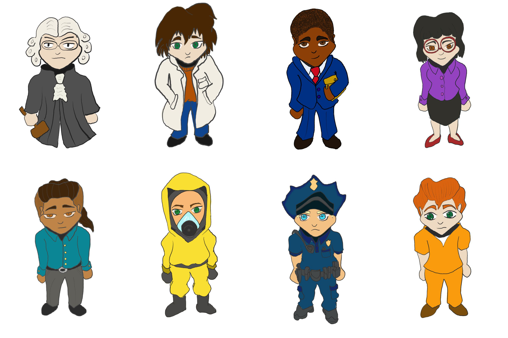
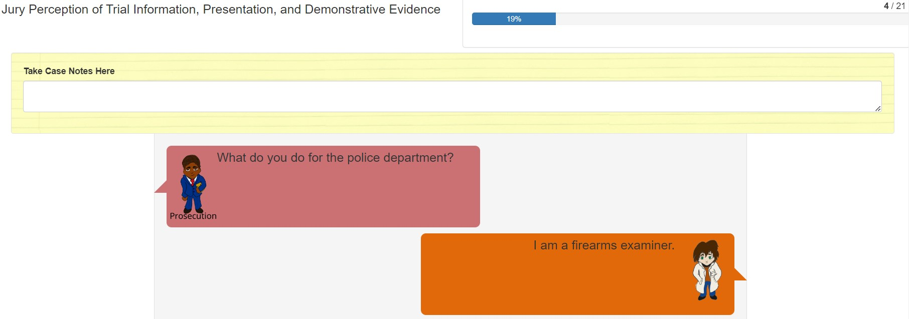

B Study 2 Changes
B.1 Cautions Against Expert Witnesses
B.1.1 Jury Instructions
You have heard testimony from Terry Smith and Adrian Jones who have testified to opinions and the reasons for their opinions. This opinion testimony is allowed because of the education or experience of this witness. Such opinion testimony should be judged like any other testimony. You may accept or reject it, and give it as much weight as you think it deserves, considering the witness’s education and experience, the reasons given for the opinion, and all the other evidence in the case. (United States Courts for the Ninth Circuit, 2019)
B.1.2 Opinion Witness
United States Courts for the Ninth Circuit (2019) suggests that witnesses should not be qualified as experts, as it may cause the jury to place undue weight in their testimony. Instead, Richey (1994) implements the term “opinion witness” in the place of “expert witness”. This practice has been adopted in our revised testimony, when qualifying the witness based on experience and education.
B.1.3 Cross Examination
The strength of evidence (“the probability that the two markings were made by different sources is so small that it is negligible”) was moved from the cross examination to the direct examination, since this strength of evidnece should be introduced by the prosecution. Additional testimony regarding subjectivity was added to the cross examination as well, from (U.S. Vs. Harris, 2016, p. 54):
Q: You have a criterion in you head, a subjective criterion, of what will constitute an identification. Is that correct?
A: Yes.
Q: All right. If we brought three more people in, would their subjective criterion in their head be identical to yours?
A: They would look for that same sufficient agreement. However, based on their training and experience on difficult comparisons, they may or may not come to the same decision.
Q: Right. But they also could reach the same decision but have a different subjective criterion than you. Is that fair?
A: They may, possibly. I don’t know. I can’t speak for other examiners.
Additional testimony was also added to address the distinction between evidence that the gun was at the crime scene, and evidence that Cole was at the crime scene (State of Florida vs. Sheppard Jr., 2012, p. 831):
Q: You can’t tell us anything about who shot the firearm, correct?
A: That is correct.
B.2 Clarifying Sides
To make sure individuals are clear on who the firearms examiner is testifying for, testimony was added related to the calling and the swearing in of the witness. The testimony below is from The People of the State of Michigan v. Andrew Mack Johnson, Jr. (2018).
Court: Your next witness, please.
Prosecution: The People would call John Smith.
Court: Hello.
Smith: Hi
Court: Would you raise your right hand for me? Do you sear the testimony you’re about to give will be the truth, the whole truth, nothing but the truth, under penalty of perjury?
Smith: I do.
Court: Please be seated. State your full name for the record and spell your last name.
Witness: My name in John Smith, last name S-m-i-t-h
B.3 Images
In order to clarify the speakers in the testimony and create a more engaging environment, we implemented character drawings (by Richy Meleus) to represent various actors that may be present in the courtroom. These characters’ faces and clothing are largely exchangeable, allowing for a large combination of clothing and characteristics.


These images were placed in their respective speech bubbles in order to indicate the speaker, with color coding to indicate which side witnesses were testifying for: the prosecution’s side had warmer colors, the defense had cooler colors, and the judge was a neutral grey.
